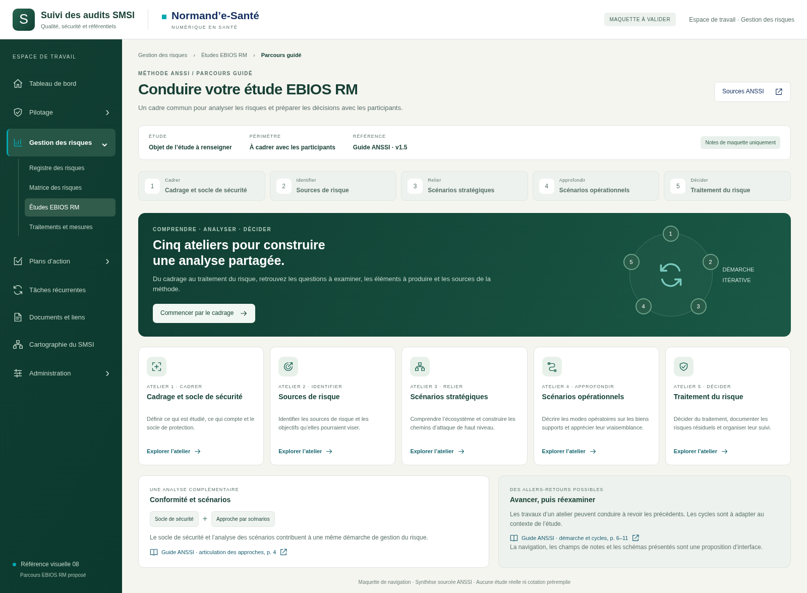
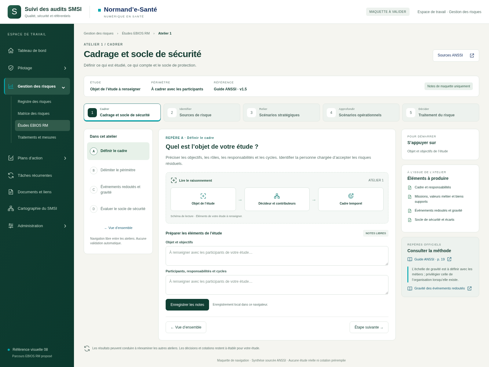
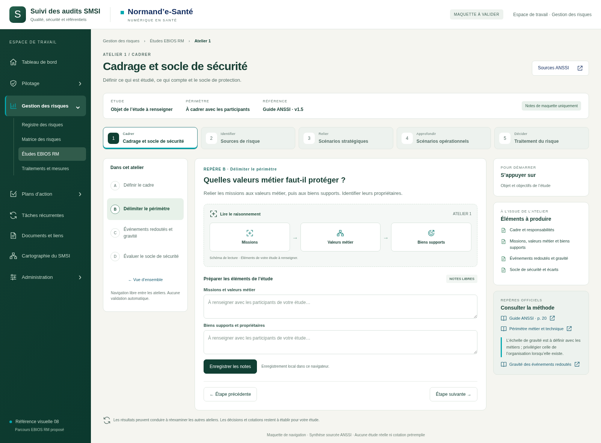
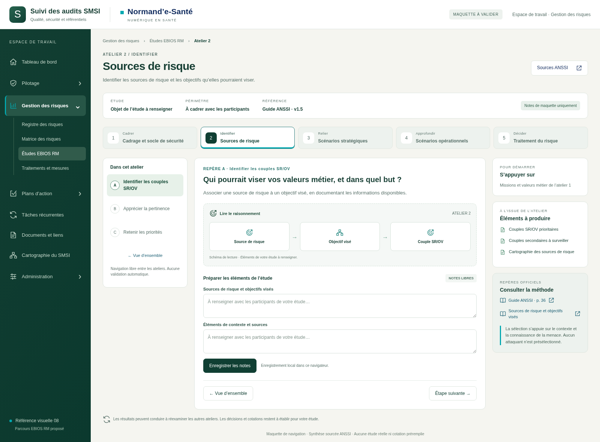
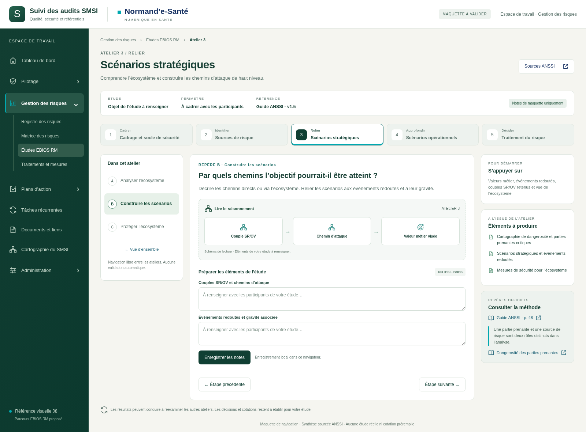
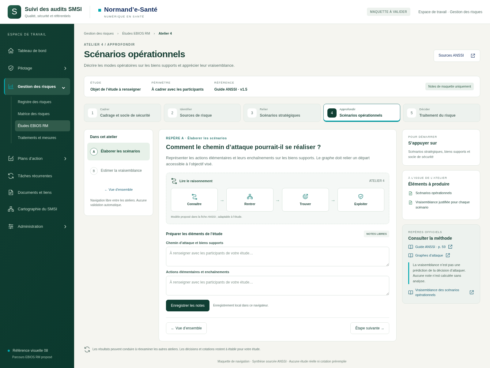
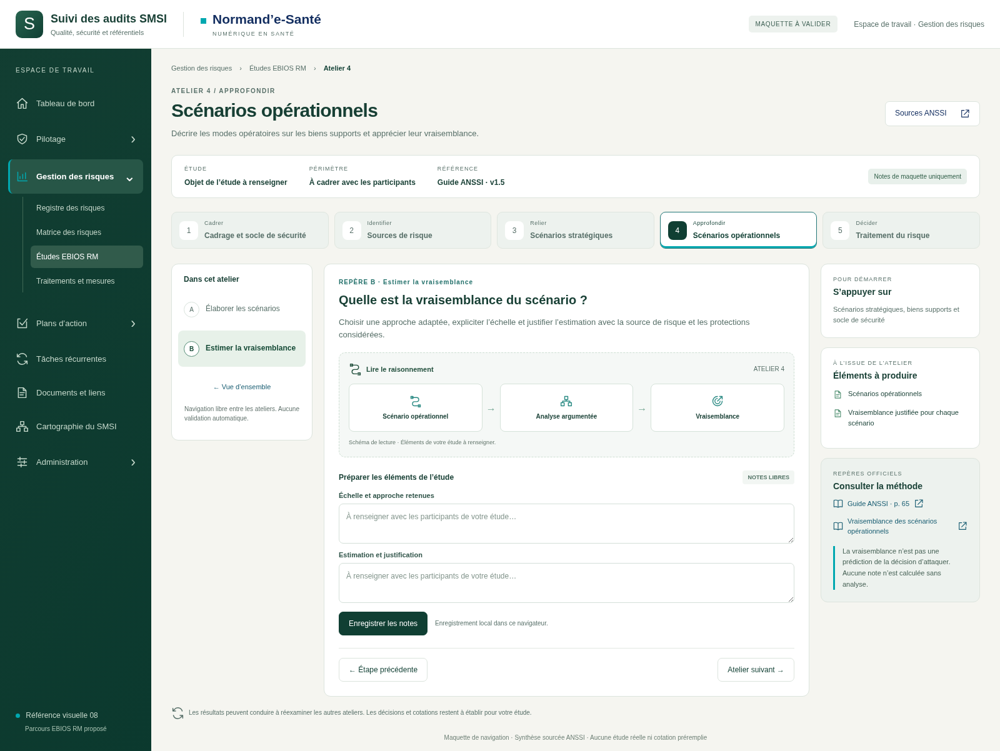
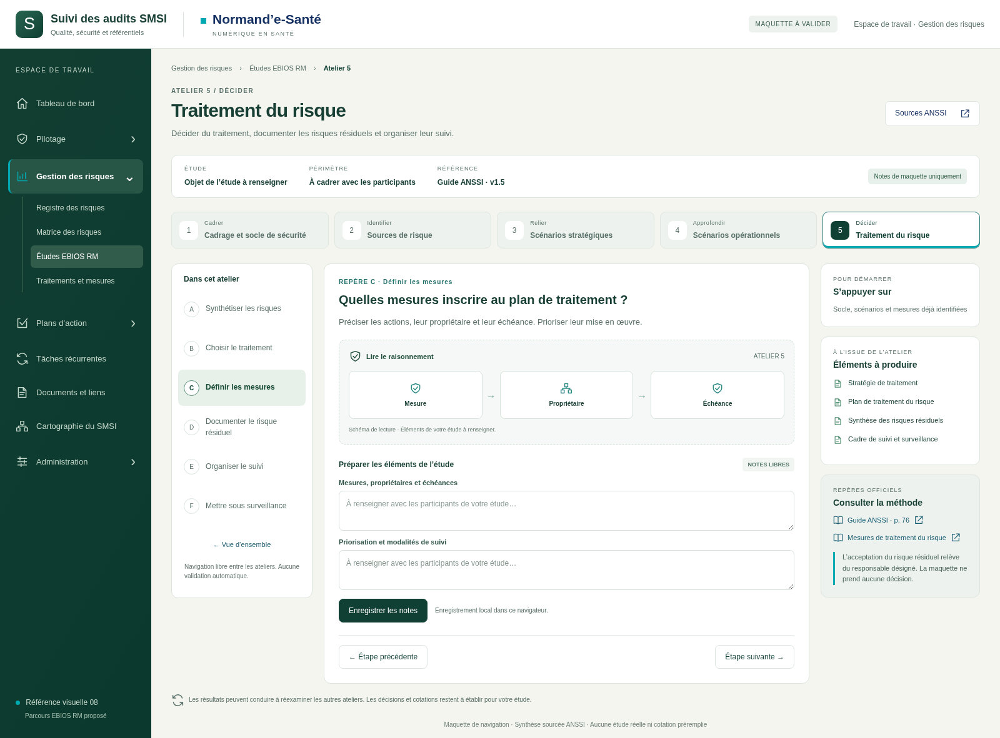
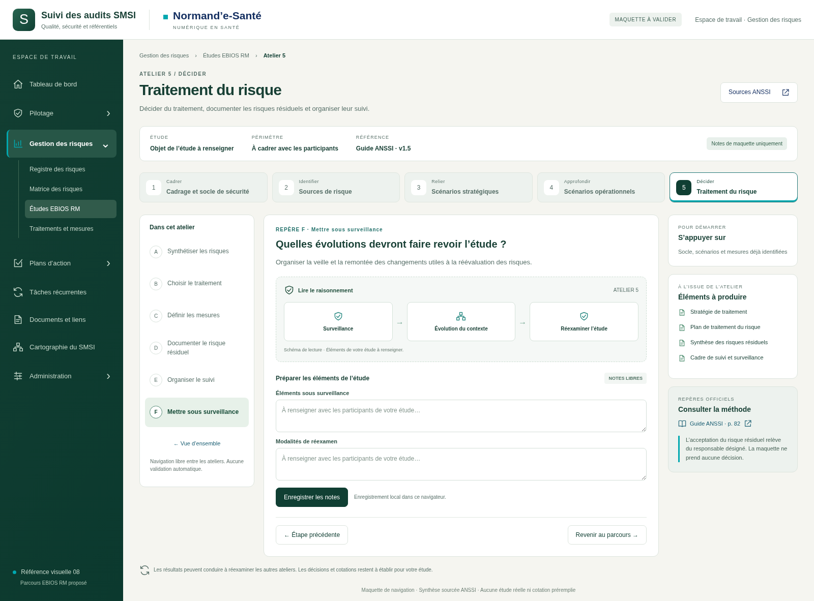

Parcours EBIOS RM · Dix vues à valider
Style 08 · Maquette proposée pour Gestion des risques → Études EBIOS RM.
Ouvrir le prototype interactif → · Correspondance des sources ANSSI
Vue d’ensemble
Explorer cette étape
Atelier 1 · Cadrage
Explorer cette étape
Atelier 1 · Périmètre
Explorer cette étape
Atelier 2 · Sources de risque
Explorer cette étape
Atelier 3 · Écosystème
Explorer cette étapeAtelier 3 · Scénarios stratégiques
Explorer cette étape
Atelier 4 · Scénarios opérationnels
Explorer cette étape
Atelier 4 · Vraisemblance
Explorer cette étape
Atelier 5 · Plan de traitement
Explorer cette étape
Atelier 5 · Surveillance
Explorer cette étape